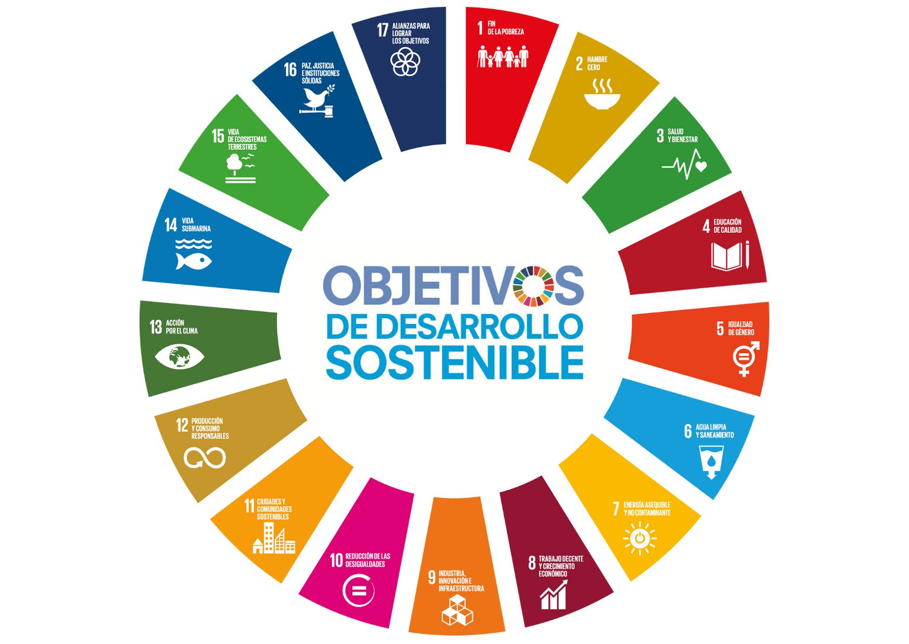
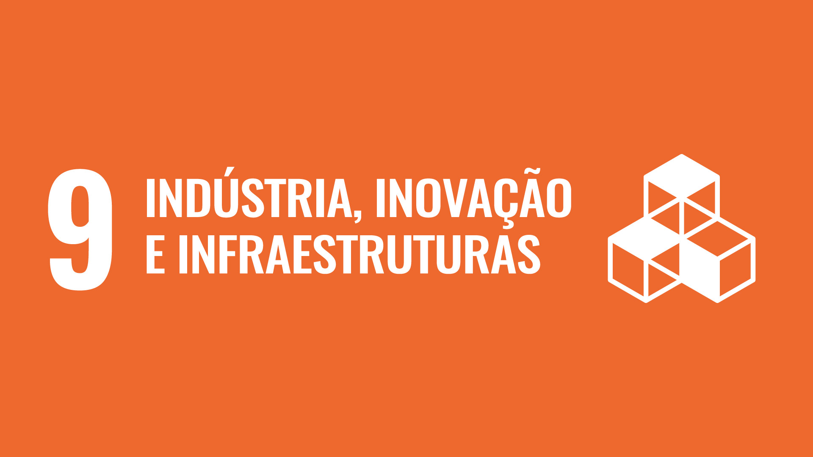

Motivações para o Projeto
A motivação para este projeto nasceu da iniciativa dos integrantes Gustavo Santana Marcolino e Igor Brandon Hasler. A proposta foi desenvolver uma impressora 2D robusta e de maior precisão, aproveitando a experiência que a equipe adquiriu em projetos anteriores com princípios de funcionamento semelhantes. Sendo assim, o trabalho apresentado é a evolução de uma impressora 2D caseira, desenvolvida previamente pela equipe, cujo funcionamento é demonstrado no vídeo a seguir.
Vídeo da impressora 2D criada pelo integrante Igor
Esta impressora 2D caseira transforma um desenho digital em um traçado físico. Para a movimentação precisa nos eixos X e Y, foram reaproveitados os mecanismos de dois drives de CD/DVD antigos. Cada mecanismo, com seu motor de passo e trilhos, é responsável por um eixo. O sistema é controlado por um microcontrolador que lê as coordenadas do desenho e comanda os motores, guiando a caneta sobre o papel para replicar a imagem.
Explicação do projeto
Capitalizando o sucesso e o aprendizado obtido com a construção da impressora 2D inicial, este novo projeto representa um salto em direção a uma ferramenta de desenho digital mais robusta, precisa e versátil. O objetivo é superar as limitações da estrutura anterior, baseada em drives de CD, que restringiam a área de trabalho, a velocidade e os tipos de ferramentas que poderiam ser utilizadas.
Para alcançar um desempenho superior, a nova impressora será construída sobre uma base técnica mais sólida. Abandonaremos os mecanismos limitados dos drives de CD para adotar uma estrutura mais rígida e dimensionada, utilizando perfis de alumínio, que garantem a estabilidade necessária para traçados precisos e rápidos. O movimento nos eixos X e Y será controlado por motores de passo mais potentes e precisos (como NEMA 17), guiados por correias e polias, aumentando significativamente a área útil de desenho e a confiabilidade do sistema.
A principal inovação será a implementação de um sistema de "cabeça de ferramenta" modular e intercambiável. Para a função 2D, acoplaremos um suporte para canetas e marcadores de diferentes espessuras, e futuramente, vislumbramos a possibilidade de adaptar ferramentas leves, como uma faca de arrasto para corte de vinil ou um laser de baixa potência para gravação.
Todo o sistema será gerenciado por uma placa controladora dedicada (como um Arduino com CNC Shield), rodando um firmware especializado em controle de movimento 2D (como o GRBL). Este firmware é capaz de interpretar G-code gerado a partir de softwares de desenho vetorial (como o Inkscape), traduzindo as coordenadas do desenho em movimentos precisos dos motores.
A principal vantagem é a versatilidade, transformando a máquina de um experimento de hobby em uma ferramenta funcional para prototipagem de desenhos técnicos, arte e pequenos trabalhos de precisão. A nova estrutura e os componentes de maior qualidade resultarão em um aumento significativo de precisão, velocidade e confiabilidade em todas as operações. Além do hardware, o projeto representa um avanço no aprendizado de software, exigindo o domínio de fluxos de trabalho para converter desenhos vetoriais em G-code. Este projeto também servirá como forma de aplicação prática de conceitos estudados na matéria de Cálculo de Várias Variáveis, especialmente no que tange à interpolação de curvas e trajetórias no plano XY.
Sobre a ODS
Os Objetivos de Desenvolvimento Sustentável (ODS) representam um plano de ação global adotado por todos os Estados-membros da Organização das Nações Unidas (ONU) em 2015. Trata-se de uma agenda ambiciosa, composta por 17 objetivos interconectados, que abordam os maiores desafios do nosso tempo, como a erradicação da pobreza, a proteção do meio ambiente, a busca pela paz e a garantia de que todas as pessoas possam desfrutar de prosperidade. Funcionando como um chamado universal à ação, a Agenda 2030 nos convida a colaborar — governos, empresas e sociedade civil — para construir um futuro mais justo e sustentável para todos, sem deixar ninguém para trás.
Dentre os 17 objetivos, nosso projeto se conecta de forma direta com a ODS 9: Indústria, Inovação e Infraestrutura. A escolha foi natural, pois a base do nosso trabalho se encaixa com esses três pilares. O projeto é um exercício prático de pesquisa e desenvolvimento que nos capacita com habilidades relevantes para a indústria moderna (Indústria 4.0), ao mesmo tempo em que exploramos processos mais eficientes e sustentáveis. A ODS 9 nos fornece, portanto, se conecta perfeitamente com os interesse do nosso projeto.
Em conclusão, ao alinhar nosso projeto à ODS 9, buscamos demonstrar que a inovação tecnológica,mesmo em escala acadêmica, é uma poderosa ferramenta de transformação. A construção da impressora 2D/3D será uma otima forma de aplicar nossos conhecimentos adiquiridos no curso e aplicar a lógica das ODSs.